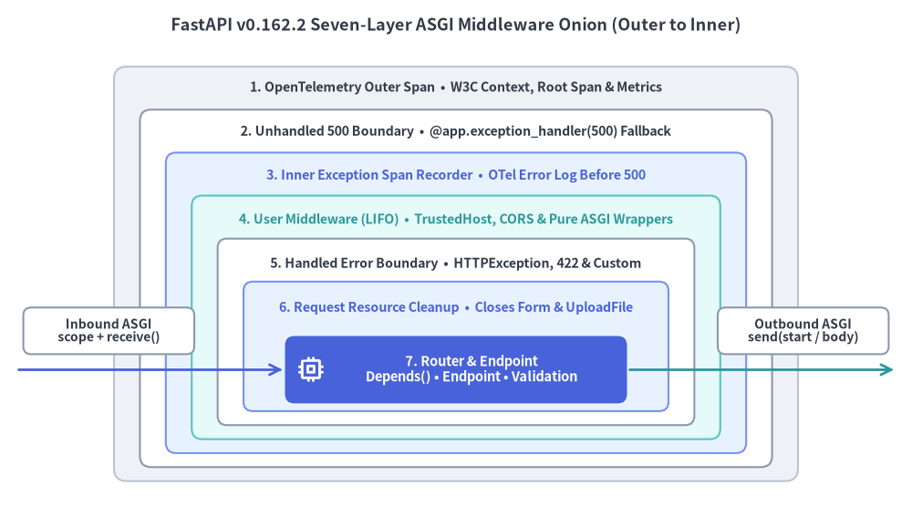
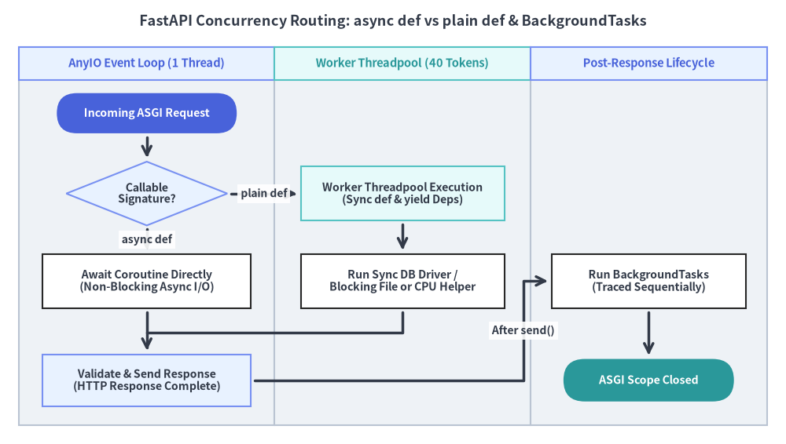

ASGI ミドルウェアとスレッドプール制御
FastAPI v0.162.2 は、すべての HTTP リクエストおよび WebSocket 接続を決定論的な 7 層の ASGI ミドルウェアオニオン構造で処理しつつ、async def コルーチンはシングルスレッドの AnyIO イベントループ上で直接実行し、通常の def 関数は上限付きワーカースレッドプールへ安全にオフロードします。

1. 7 層から成る ASGI ミドルウェアオニオン
Uvicorn などの ASGI サーバーが受信した HTTP リクエストや WebSocket ハンドシェイクを処理する際、FastAPI は決定論的な 7 層の ASGI ミドルウェアパイプラインへ順番に処理を渡します。この正確なネスト順序を把握しておくことで、500 エラー時の CORS ヘッダー欠落、OpenTelemetry の例外ログ相関、contextvars の伝播境界にまつわるバグを未然に防げます。
| レイヤー（外側から内側） | 公開 API / 機構 | v0.162.2 における主な責務 |
|---|---|---|
| 1. OpenTelemetry 外殻スパン | FastAPI(telemetry=...) |
W3C traceparent/baggage の抽出、ルート HTTP/WebSocket スパンの開始、アクティブ接続数の計測、およびリクエストテレメトリコンテキスト（get_telemetry_data()）の保持を行います。 |
| 2. 未処理 500 防衛境界 | @app.exception_handler(500) / Exception |
カスタム 500 ハンドラーを実行し、内側の層から漏れた予期せぬ例外に対して安全な 500 Internal Server Error 応答を保証します。 |
| 3. 内側例外スパン記録 | TelemetryConfig（logs=True） |
外側の 500 境界が HTTP 応答へ変換する直前に未処理例外をアクティブスパンへ記録し、構造化された OTel ERROR ログイベントを送出します。 |
| 4. ユーザーミドルウェア群 | app.add_middleware(...) / @app.middleware("http") |
CORSMiddleware、TrustedHostMiddleware、GZipMiddleware、純粋 ASGI クラスなどを LIFO（後入れ先出し）順 で実行します（最後に追加したミドルウェアが最も外側を包みます）。 |
| 5. 制御されたエラー境界 | @app.exception_handler(...) |
HTTPException、RequestValidationError（422）、WebSocketRequestValidationError（1008）、およびカスタムドメイン例外ハンドラーを捕捉します。 |
| 6. リクエストリソース解放 | Form / UploadFile ライフサイクル |
すべてのユーザーミドルウェアの内側かつ同一の contextvars スコープ内で、Form や UploadFile の一時ファイルハンドルを確実にクローズします。 |
| 7. ルーター & エンドポイント実行 | APIRouter / Depends() |
ボディ読取、依存性注入（DI）の解決（ストリーム終了後のリクエストスコープ解放を含む）、エンドポイント実行、レスポンス検証、および BackgroundTasks の予約を行います。 |
純粋な ASGI ミドルウェア vs BaseHTTPMiddleware
@app.middleware("http")（内部的に Starlette の BaseHTTPMiddleware を使用）は、リクエストごとに追加の AnyIO タスクグループを生成して contextvars のコピー境界を作るため、高スループットな SSE や JSONL ストリーミング ではオーバーヘッドや制約が生じやすくなります。処理時間計測、相関 ID 付与、テナント検証、セキュリティヘッダー注入などの横断的関心事には、レスポンスボディを一切バッファリングせず http.response.start を直接フックする 純粋な ASGI ミドルウェアクラス の採用が推奨されます。
from time import perf_counter
from fastapi import FastAPI
from fastapi.middleware.cors import CORSMiddleware
from fastapi.middleware.trustedhost import TrustedHostMiddleware
from fastapi.testclient import TestClient
from starlette.types import ASGIApp, Message, Receive, Scope, Send
class ProcessTimeMiddleware:
"""Zero-buffering pure ASGI middleware that injects X-Process-Time-Ms."""
def __init__(self, app: ASGIApp) -> None:
self.app = app
async def __call__(self, scope: Scope, receive: Receive, send: Send) -> None:
if scope["type"] != "http":
await self.app(scope, receive, send)
return
started = perf_counter()
async def send_with_timing(message: Message) -> None:
if message["type"] == "http.response.start":
elapsed_ms = (perf_counter() - started) * 1000.0
raw_headers = list(message.get("headers", []))
raw_headers.append(
(b"x-process-time-ms", f"{elapsed_ms:.2f}".encode("latin-1"))
)
message = {**message, "headers": raw_headers}
await send(message)
await self.app(scope, receive, send_with_timing)
app = FastAPI()
# LIFO wrapping order: TrustedHost (outer) -> CORS -> ProcessTime (inner)
app.add_middleware(ProcessTimeMiddleware)
app.add_middleware(
CORSMiddleware,
allow_origins=["https://app.example.com"],
allow_methods=["GET", "POST"],
allow_headers=["Authorization", "Content-Type"],
)
app.add_middleware(
TrustedHostMiddleware,
allowed_hosts=["api.example.com", "testserver"],
)
@app.get("/ping")
async def ping() -> dict[str, str]:
return {"status": "ok"}
client = TestClient(app)
res = client.get("/ping", headers={"Origin": "https://app.example.com"})
assert res.status_code == 200
assert "x-process-time-ms" in res.headers
未処理 500 エラー時の CORS ヘッダー: 未処理
500防衛境界（第 2 層）はapp.add_middleware(...)で追加したユーザーミドルウェア群（第 4 層）の外側に位置するため、第 2 層で生成されるデフォルトの500レスポンスはCORSMiddlewareを通過しません。ブラウザ向けに一貫したオリジン制御が必要な場合は、@app.exception_handler(Exception)を定義するかリバースプロキシ側で許可オリジンを明示し、認証付き API でallow_origins=["*"]を絶対に使用しないでください。
2. イベントループ vs ワーカースレッドプールと BackgroundTasks
FastAPI はルート登録時に関数シグネチャを検査し、イベントループ上での直接実行（async def）と AnyIO ワーカースレッドプールへの委譲（def）を自動的に振り分けます。

FastAPI 並行実行の 3 原則
async defはイベントループ上で直接動作する: 非同期ネイティブドライバ（httpx.AsyncClient、asyncpg、redis.asyncio、anyioなど）をawaitする場合はasync defを使用します。async defの内部で同期ブロッキング関数（time.sleep()、requests.get()、同期 ORM クエリ、重い CPU ループ）を直接呼び出してはなりません。呼び出すとワーカープロセス全体のイベントループが停止し、他の同時接続リクエストがすべてフリーズします。- 通常の
defと同期yield依存関係はスレッドプールで実行される: 通常のdefエンドポイントや同期yield依存関数は、AnyIO のデフォルト40トークン（CapacityLimiter）で制御されたワーカースレッドプール上で前処理・後処理ともに安全に実行されます。async defエンドポイント内から一部の同期ヘルパーだけを呼びたい場合は、await run_in_threadpool(fn, *args)で明示的にオフロードします。 BackgroundTasksはレスポンス送信完了後に順次実行される:BackgroundTasksに登録された処理は、クライアントへ HTTP レスポンスを返し終えた後にfastapi.background_taskの OpenTelemetry スパン 付きで順次実行されます。監査ログ記録やキャッシュ更新などの軽量なベストエフォート処理に限定し、再試行保証や長時間ジョブには外部の永続ジョブキューを併用してください。
from collections.abc import Iterator
from typing import Annotated
import anyio
from fastapi import BackgroundTasks, Depends, FastAPI, status
from fastapi.testclient import TestClient
from starlette.concurrency import run_in_threadpool
app = FastAPI()
audit_log: list[str] = []
def compute_digest_sync(payload: str) -> str:
return f"len:{len(payload)}"
def get_sync_session() -> Iterator[str]:
# Entered & exited safely on the worker threadpool
audit_log.append("session:open")
try:
yield "tx-101"
finally:
audit_log.append("session:close")
@app.get("/reports/sync")
def read_sync_report(
tx_id: Annotated[str, Depends(get_sync_session)],
) -> dict[str, str]:
return {"tx_id": tx_id, "summary": compute_digest_sync("quarterly-ledger")}
@app.post("/reports/async", status_code=status.HTTP_202_ACCEPTED)
async def submit_async_report(
payload: str,
tasks: BackgroundTasks,
) -> dict[str, str]:
digest = await run_in_threadpool(compute_digest_sync, payload)
await anyio.sleep(0)
tasks.add_task(audit_log.append, f"audit:{digest}")
return {"accepted": digest}
client = TestClient(app)
assert client.get("/reports/sync").json() == {"tx_id": "tx-101", "summary": "len:16"}
assert client.post("/reports/async", params={"payload": "hello"}).status_code == 202
assert audit_log == ["session:open", "session:close", "audit:len:5"]
次節の ネイティブ SSE・JSONL・WebSocket では、この非同期実行基盤の上に構築された 3 つのリアルタイム配信・双方向通信プリミティブを詳しく解説します。